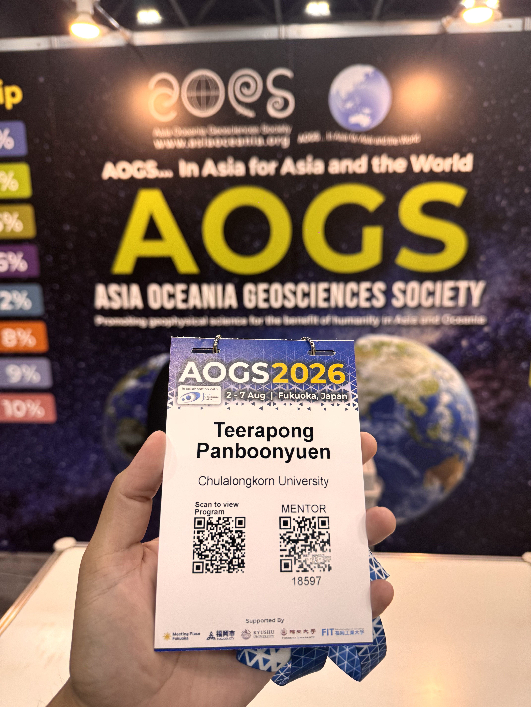
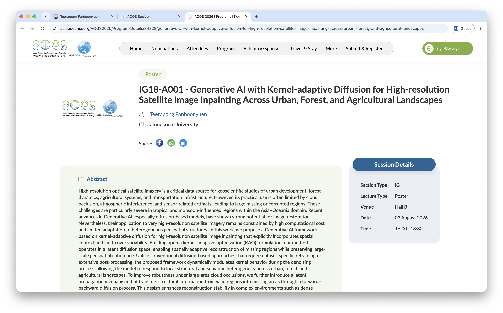
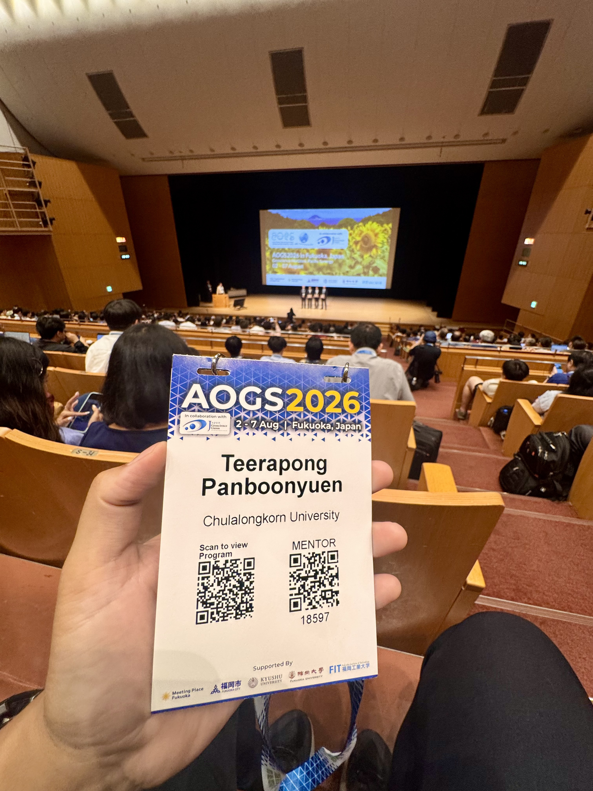
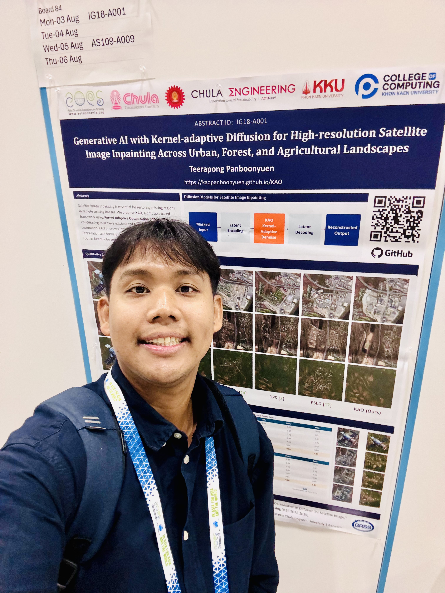
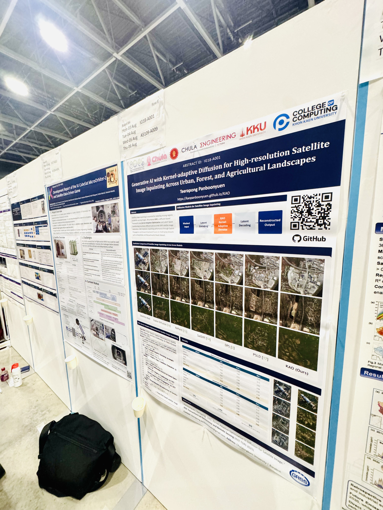
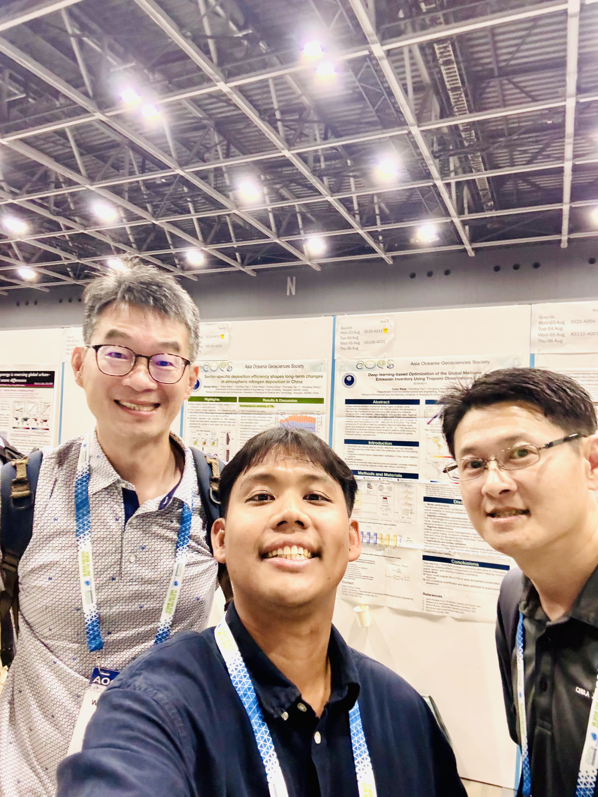
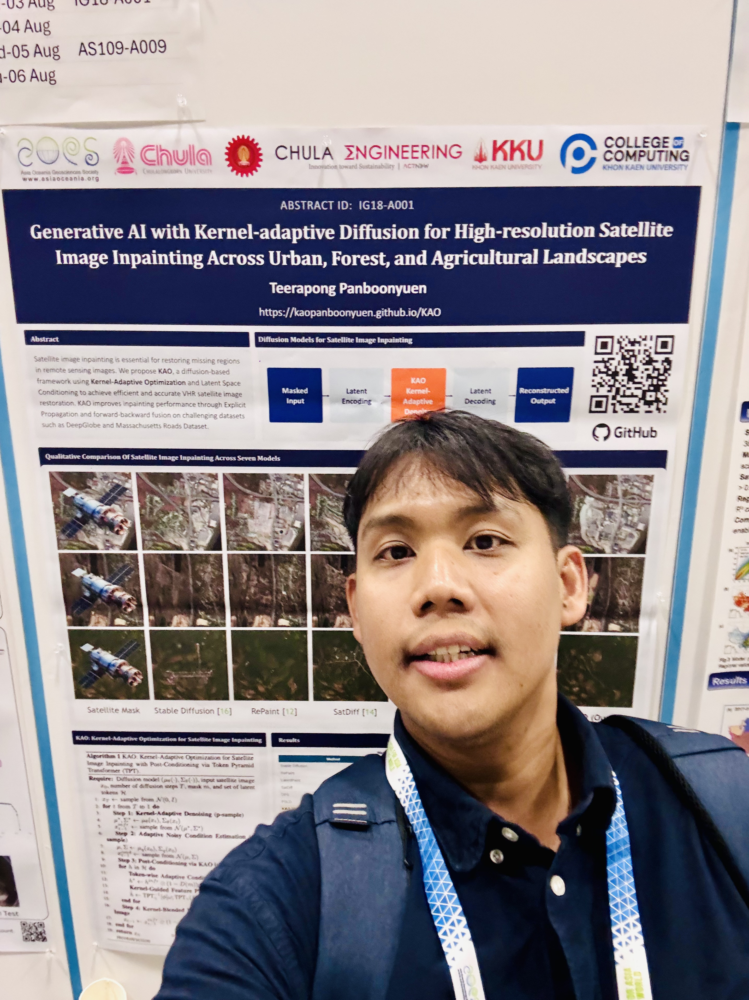
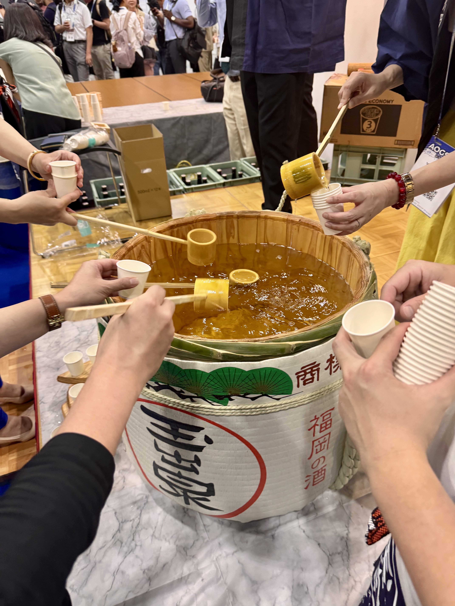

From IEEE TGRS to AOGS 2026: Bringing Generative AI to the Global Geoscience Community
On bringing a year-old IEEE TGRS paper to a room full of geoscientists, falling for Fukuoka, and holding space for Kumamoto.
 Presenting at AOGS2026, the 23rd annual meeting of the Asia Oceania Geosciences Society, held at the Fukuoka International Congress Centre, Japan.
Presenting at AOGS2026, the 23rd annual meeting of the Asia Oceania Geosciences Society, held at the Fukuoka International Congress Centre, Japan.
🌏 From IEEE TGRS to AOGS 2026: Bringing Generative AI to the Global Geoscience Community
“Some trips are about the talk you give. Others are about everything that happens around it. This one was both.”
I’m writing this from a week that felt, at times, like too much to hold at once — the excitement of a first-time visit, the heat of a Kyushu summer, the quiet worry of an earthquake, and the simple joy of standing in front of a room of geoscientists to talk about something I’ve been building for years.
This year, I had the honor of presenting my work at AOGS2026, the 23rd Annual Meeting of the Asia Oceania Geosciences Society, held under the theme “Geoscience Horizons, Pacific Synergy” at the Fukuoka International Congress Centre, Japan, from 2 to 7 August 2026. Thousands of geoscientists from across disciplines — atmosphere, ocean, solid earth, hydrology, and everything in between — gathered in one place, and somehow, my work on generative AI for satellite imagery got to be part of that conversation.
You can find the official program here: AOGS2026 — Generative AI with Kernel-adaptive Diffusion for High-resolution Satellite Image Inpainting Across Urban, Forest, and Agricultural Landscapes, and more about the conference itself at AOGS2026 Home.

Figure 1: Receiving my official conference badge for the 21st Annual Meeting of the Asia Oceania Geosciences Society (AOGS 2026) marked the true beginning of an exciting scientific journey in Fukuoka, Japan. Standing beside the official AOGS sign after registration, I could finally feel that months of research preparation had become reality. Every international conference begins with a simple badge, but behind it are countless hours of research, experiments, paper writing, and preparation. This badge symbolizes not only participation in one of Asia's largest geoscience conferences, but also the opportunity to exchange ideas with scientists from around the world and represent Thailand on the international stage.

Figure 2: Screenshot of the official homepage of
AOGS 2026.
I really admire this year's conference theme:
"In Asia, For Asia and the World."
It perfectly reflects the mission of the Asia Oceania Geosciences Society—to
promote geophysical sciences for the benefit of humanity while fostering
international collaboration across Asia, Oceania, and beyond.
As an AI researcher working in Earth observation, it is inspiring to become
part of a scientific community where researchers from many disciplines gather
to solve global environmental challenges together.
Credit: Asia Oceania Geosciences Society (AOGS).
Official Website:
https://www.asiaoceania.org/

Figure 3: The official conference program showing my accepted
poster presentation:
IG18-A001 — "Generative AI with Kernel-adaptive Diffusion for High-resolution Satellite Image Inpainting Across Urban, Forest, and Agricultural Landscapes."
This presentation adapts my IEEE Transactions on Geoscience and Remote Sensing
(IEEE TGRS) research into a form that is accessible to the broader geoscience
community, emphasizing how modern Generative AI can improve satellite image
restoration and Earth observation analysis.
Seeing my work officially listed among hundreds of international presentations
is both an honor and a reminder of the collaborative nature of scientific progress.
Credit: Asia Oceania Geosciences Society (AOGS).
Official Presentation Page:
https://www.asiaoceania.org/AOGS2026/Program-Details/34328/generative-ai-with-kernel-adaptive-diffusion-for-high-resolution-satellite-image-inpainting-across-urban,-forest,-and-agricultural-landscapes

Figure 4: The official homepage of
AOGS 2026.
Before traveling to Japan, many participants were understandably concerned
about the possibility of conference cancellation following the
2026 Kumamoto earthquake.
Fortunately, the organizers confirmed that the meeting would proceed as scheduled,
allowing researchers from around the world to continue sharing scientific discoveries.
I therefore traveled from Bangkok to Fukuoka to present my work in person.
At the same time, I would like to express my deepest condolences to everyone
affected by this devastating earthquake.
My thoughts are with the victims, their families, and all communities impacted
by this disaster.
I sincerely hope Japan will continue its remarkable recovery with the resilience
and strength that has always inspired the world.
Credit: Asia Oceania Geosciences Society (AOGS).
Official Website:
https://www.asiaoceania.org/AOGS2026/Home
🛰️ From TGRS to a Geoscience Audience: Translating KAO Into a Story Anyone Could Follow
Last year, my paper “KAO: Kernel-Adaptive Optimization in Diffusion for Satellite Image” was published in IEEE Transactions on Geoscience and Remote Sensing (TGRS). Like most papers in that journal, it was written the way engineers write for other engineers — dense, technical, full of equations and ablation tables that make perfect sense to a remote sensing AI researcher and very little sense to almost anyone else.
AOGS is not that audience. It’s geologists, oceanographers, atmospheric scientists, hydrologists — brilliant people who think in terms of landscapes, processes, and physical systems, not loss functions and kernel bandwidths. So instead of walking in with the original TGRS framing, I rebuilt the story around a question that any geoscientist would immediately recognize: what do you do when your satellite image has a hole in it?
That’s the plain-language heart of the work. Clouds block a scene. A sensor drops out. A swath of forest, farmland, or city block simply isn’t there in the data you need. My presentation, “Generative AI with Kernel-adaptive Diffusion for High-resolution Satellite Image Inpainting Across Urban, Forest, and Agricultural Landscapes,” was my attempt to explain how a kernel-adaptive diffusion model can fill in those gaps — not with a blurry guess, but with something that respects the very different textures and structures of a city block, a forest canopy, and a farm field, which behave completely differently under the hood.

Figure 5: Taking a photo with my conference badge during the spectacular opening ceremony held in the main hall of the Fukuoka International Congress Center, Japan. The venue welcomed thousands of geoscientists from across Asia, Oceania, Europe, and many other regions, creating an inspiring atmosphere filled with scientific curiosity and international collaboration. Witnessing such a large gathering of researchers working toward a better understanding of our planet was an unforgettable experience.

Figure 6: Standing beside my completed poster presentation in Session IG18-A001. This work presents my IEEE TGRS research on Kernel-adaptive Diffusion for satellite image inpainting, restructured specifically for the geoscience audience attending AOGS. Rather than focusing solely on deep learning innovations, I emphasized the practical value of Generative AI for remote sensing applications, including urban environments, forests, and agricultural landscapes. Preparing a poster for an interdisciplinary audience was both challenging and rewarding, requiring complex AI concepts to be communicated in a way that researchers from diverse geoscience backgrounds could easily appreciate.

Figure 7: My poster successfully installed at the official presentation board provided by AOGS 2026. Walking through the poster hall before the session began, I was amazed by the enormous number of researchers preparing to present their latest discoveries. Although I felt a little nervous, the excitement of becoming part of such an international scientific event quickly outweighed the pressure.
Reframing a TGRS paper for a geoscience-first audience turned out to be its own kind of research exercise. I had to strip away the machine learning jargon and instead lead with the landscape — urban, forest, agricultural — because that’s the language this room speaks fluently. Watching people nod along, ask questions about specific land-cover types rather than architecture details, was its own quiet reward.

Figure 8: The lively atmosphere during the poster session. Throughout the presentation period, many researchers stopped by to discuss my work, ask insightful questions, and exchange ideas about Generative AI, satellite image restoration, remote sensing, and Earth observation. It was wonderful to see how rapidly AI has become an integral part of modern geoscience research, bringing together scientists from different disciplines to tackle increasingly complex environmental problems.

Figure 9: A memorable selfie with my postdoctoral advisor, Professor Chalermchon Satirapod, together with Professor Wei-Chia (Kelvin) Hung, General Manager of Green Environment Engineering Consultant Company, Taiwan. Professor Hung has extensive expertise in GNSS, InSAR, GPS surveying, leveling, and land subsidence monitoring. Our conversations about combining modern Artificial Intelligence with geodetic technologies were particularly inspiring. I sincerely hope that future collaborations will allow us to integrate advanced AI methodologies into GNSS and InSAR applications for more accurate environmental monitoring and geospatial analysis.
✈️ First Time in Kyushu, First Time in Fukuoka
This was my first visit to Kyushu, and my first time in Fukuoka altogether, and I couldn’t have asked for a better introduction to this part of Japan. I flew in for five days, and even though the heat this time of year was genuinely brutal — the kind of humid summer heat that makes you question your life choices the moment you step outside — none of that dulled how much I love being in Japan.
There’s something about the atmosphere here that I keep coming back for: the order, the quiet discipline in how everything runs, and the warmth of the people underneath all of that structure. Fukuoka gave me all of that, plus something I wasn’t expecting — genuinely incredible ramen. I made sure to try the city’s original-style bowl, and it did not disappoint. If you’re ever in Fukuoka, that’s non-negotiable.
🙏 Holding Space for Kumamoto
I’ll be honest about something that weighed on me in the lead-up to this trip. Earlier this year, the 2026 Kumamoto earthquake struck the region, and for a while I genuinely wasn’t sure whether AOGS2026 would go ahead as planned. When the organizers confirmed the conference would proceed as scheduled, I booked my flight from Bangkok to Fukuoka to come present my work.
But arriving here with that news still fresh, I couldn’t just move past it without saying something. To everyone in Kyushu and across Japan affected by the earthquake — I’m deeply sorry for what was lost, and I’m holding onto real hope and confidence that recovery is already underway and will continue. Japan has shown, again and again, a remarkable capacity to rebuild with resilience and grace, and I wanted this post to carry that acknowledgment alongside everything else I’m grateful for this week.
🤝 New Friends, New Connections, New Horizons
If there’s one thing I’ll take home from AOGS2026 beyond the talk itself, it’s how much this trip opened up my view of geoscience as a field. Coming from a background rooted in AI and remote sensing, I don’t always get to sit across the table from oceanographers, seismologists, or atmospheric scientists — and this week, I did, repeatedly, over coffee breaks and poster sessions and post-talk conversations that ran long in the best way.
I met professors from institutions across the region, exchanged ideas about where generative AI could actually be useful in their corners of geoscience, and left with more open threads and potential collaborations than I arrived with. That, more than anything, is what makes a conference worth the jet lag.

Figure 10: Successfully completing my poster presentation at
AOGS 2026.
I was delighted to meet numerous researchers from across Asia and Europe,
exchange ideas, discuss future collaborations, and receive valuable feedback
on my IEEE TGRS research.
It was incredibly rewarding to know that many attendees showed genuine
interest in reproducing and extending my work.
All source code, datasets, and implementation details are publicly available,
supporting the principles of open science and reproducible research.
Project Website:
https://kaopanboonyuen.github.io/KAO

Figure 11: Celebrating the successful completion of the first day of presentations during the conference dinner. The organizers prepared a warm and welcoming social gathering where attendees could relax, network, and continue scientific discussions in a much more informal atmosphere. A memorable highlight was the traditional Japanese hospitality, including locally prepared beverages that participants could freely enjoy. After an intense day of presenting research, sharing conversations and laughter with fellow scientists from around the world became one of the most enjoyable moments of the conference.

Figure 12: The evening banquet following the conclusion of my poster session. Besides offering an excellent opportunity to reconnect with researchers and make new international friends, the event featured wonderful live performances showcasing traditional Japanese music and culture. Experiences like these remind us that international conferences are much more than venues for presenting research—they also build lasting friendships, cultural understanding, and future scientific collaborations across borders. Returning to Japan is always a pleasure, and visiting Fukuoka for the very first time made this AOGS journey even more memorable.
🛫 Thank You, AOGS2026
To the organizers of AOGS2026, to the reviewers who accepted this work, and to everyone I met in Fukuoka this week — thank you. This trip reminded me why I love working at the intersection of AI and Earth observation: it’s never just about the model or the metric, it’s about the people trying to understand this planet a little better, together.
Kyushu, I’ll be back.
Citation
Panboonyuen, Teerapong. (August 2026). From IEEE TGRS to AOGS 2026: Bringing Generative AI to the Global Geoscience Community. Blog post on Kao Panboonyuen.
https://kaopanboonyuen.github.io/blog/2026-08-04-from-ieee-tgrs-to-aogs-2026-bringing-generative-ai-to-the-global-geoscience-community/
For a BibTeX citation:
@article{panboonyuen2026aogs2026,
title = "From IEEE TGRS to AOGS 2026: Bringing Generative AI to the Global Geoscience Community",
author = "Panboonyuen, Teerapong",
journal = "kaopanboonyuen.github.io/",
year = "2026",
month = "August",
day = "4",
url = "https://kaopanboonyuen.github.io/blog/2026-08-04-from-ieee-tgrs-to-aogs-2026-bringing-generative-ai-to-the-global-geoscience-community/"
}
Thank you for reading about my journey to AOGS 2026 in Fukuoka, Japan, where I had the privilege of presenting my research, “Generative AI with Kernel-adaptive Diffusion for High-resolution Satellite Image Inpainting Across Urban, Forest, and Agricultural Landscapes.” 🌏🛰️🤖
This presentation represents an important milestone in the continuing journey of KAO (Kernel-Adaptive Optimization), originally published in IEEE Transactions on Geoscience and Remote Sensing (IEEE TGRS). At AOGS 2026, I had the opportunity to reintroduce this work from a different perspective—making advanced diffusion-based generative AI more accessible to the broader geoscience community and demonstrating how artificial intelligence can contribute to solving real-world Earth observation challenges.
Beyond presenting my research, this conference was an unforgettable experience. Meeting researchers, professors, and students from across Asia, Europe, and many other parts of the world reminded me that science is ultimately about collaboration, curiosity, and building connections that transcend national borders.
My sincere gratitude goes to the Asia Oceania Geosciences Society (AOGS) for accepting my work, to everyone who visited my poster session and shared thoughtful discussions, and to my mentors, collaborators, colleagues, and friends whose support has made this journey possible.
Finally, I would like to express my heartfelt sympathy to everyone affected by the 2026 Kumamoto earthquake. Despite the difficult circumstances, the conference continued as scheduled, reflecting the remarkable resilience and determination of the Japanese people. I sincerely wish for a swift recovery for all communities impacted by this disaster.
I hope this story inspires young researchers to continue exploring the intersection of artificial intelligence, remote sensing, and geoscience, and to never hesitate to share their ideas with the global scientific community.
See the Earth. Understand the Earth. Build AI that helps protect the Earth. 🌏💙
Teerapong Panboonyuen
My research focuses on leveraging advanced machine intelligence techniques, specifically computer vision, to enhance semantic understanding, learning representations, visual recognition, and geospatial data interpretation.